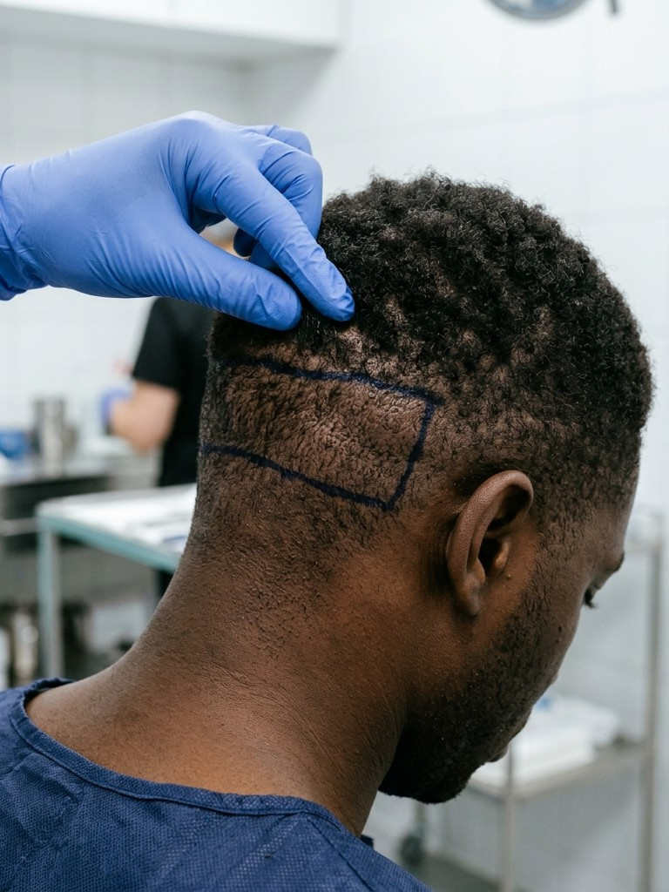

A hairline that looks like you.
Hair transplantation for Black and Afro-textured hair demands a different technique, a different design and a different level of care for scarring.

Restoration works best when the why is clear.
A transplant moves healthy follicles to where they are needed. It does not cure the cause of loss, so diagnosis comes first.
Often a good fit
- Stable loss for 6 to 12 months or more
- Healthy, dense donor area
- Inflammation controlled and diagnosis confirmed
- Realistic expectations about density
- Scars or burns on the scalp, brow or beard that are fully matured
Needs treatment first
- Active scarring alopecia (CCCA)
- Ongoing traction with no change in styling
- Untreated thyroid, iron or hormonal causes
- Very limited donor hair
- Poorly controlled keloid tendency at the donor area

Why coils change everything.
- Curved follicles. Tightly curled hair grows in a curve under the skin, so grafts are easier to damage. Extraction needs specialised punch sizing and technique.
- Scar risk. Skin that forms keloids needs careful choice of method and donor area, and often a smaller, scatter-free pattern.
- Curl is an advantage. Coiled hair gives more visual coverage per graft, so natural density can be achieved with thoughtful placement.
- Hairline design. A natural hairline for a Black face is not the template used for straight hair. Shape, height, temple points and softness are designed around you.
- Healing and styling. Plans account for protective styles, edges, and the weeks when tension must be avoided.
The restoration toolkit.
| Option | Best for | How it works | What to know |
|---|---|---|---|
| Medical therapy | Early thinning, androgenetic loss | Daily or oral medicines that slow loss and thicken hair | Needs months and ongoing use; foundation for any plan |
| PRP | Early thinning, supporting weak follicles | Platelet-rich plasma from your blood, injected into the scalp | A course of sessions; adjunct, not a cure |
| FUE transplant | Stable loss; most coiled-hair patients | Individual follicular units are extracted and implanted | Skill-dependent in coiled hair; leaves tiny dot scars; can be done with a short shave |
| FUT (strip) | Larger sessions in selected patients | A strip of donor scalp is removed and dissected into grafts | A linear scar; usually avoided if keloid-prone |
| Scar & brow/beard restoration | Burn, surgical or traumatic scars; sparse brows or beards | Grafts placed into matured scar tissue or facial areas | Scar tissue has weaker blood supply, so results vary and sessions may be staged |
What to expect, month by month.
Procedure
Local anaesthetic; extraction and placement over one day, sometimes two. Most people go home the same day.
Scabs and swelling
Tiny scabs form and fall in about a week or two. Keep the head elevated when sleeping, avoid pressure and tension.
Shedding
Transplanted hairs shed. This “shock loss” is normal and temporary.
New growth
Fine hairs begin to appear. Patience matters.
Thickening
Noticeable density; hairline softens.
Final result
Hair matures and thickens. Styling returns to normal under guidance.
Questions to ask any hair transplant clinic.
Hair restoration is surgery. Use this list, here or anywhere else.
- Who personally performs the extraction and the placement?
- How many Afro-textured hair patients have you treated, and can I see unretouched results on skin like mine?
- How will you protect my donor area for the future?
- What is my keloid and scarring risk, and what will you do about it?
- What is the graft count, and what exactly is included in the written quote?
- What happens if growth is poor?
- Who do I call if something goes wrong at 2 a.m.?
- Am I being rushed, or sold a “package”?
Density that looks like you.


Hairline restorationTraction alopecia · 10 months


Crown densityThinning crown · 8 months
Layout preview. Images shown are illustrative placeholders. Replace with real photographs only where the patient has given written consent, shot with identical lighting, angle and distance, unretouched. Individual results vary.
Hair restoration FAQ
How many grafts will I need?
It depends on the area, your donor density and the density you want. You will get a written graft estimate after assessment, never a number from a photo.
Is a hair transplant permanent?
Transplanted follicles are taken from areas resistant to loss, so they usually last. Untreated native hair around them can still thin, which is why a long-term plan matters.
Will it scar?
FUE leaves tiny dot scars that are usually hard to see; FUT leaves a linear scar. For keloid-prone skin, technique and donor choice are planned with extra care.
When can I braid or wear weaves again?
Not for several weeks, and never tight on the recipient area. Your surgeon will give a timeline and advise safe installs.
How much does it cost?
Pricing depends on the number of grafts and the complexity. You will receive a clear written quote after assessment.
Can women have transplants?
Yes, if the cause is stable and suitable. Many women with traction alopecia or hairline loss are good candidates once the cause is controlled.
Plan your restoration, properly.
Bring your questions. We will bring the diagnosis.